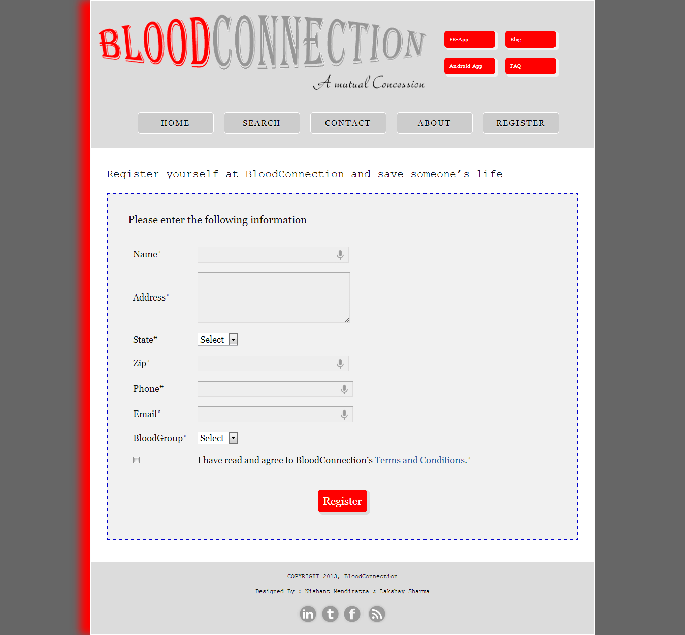
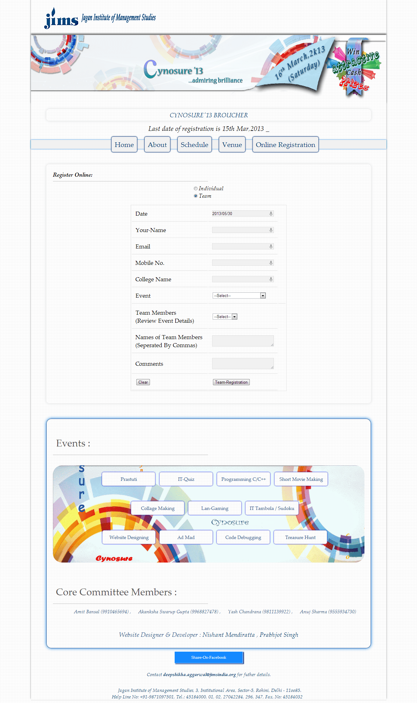
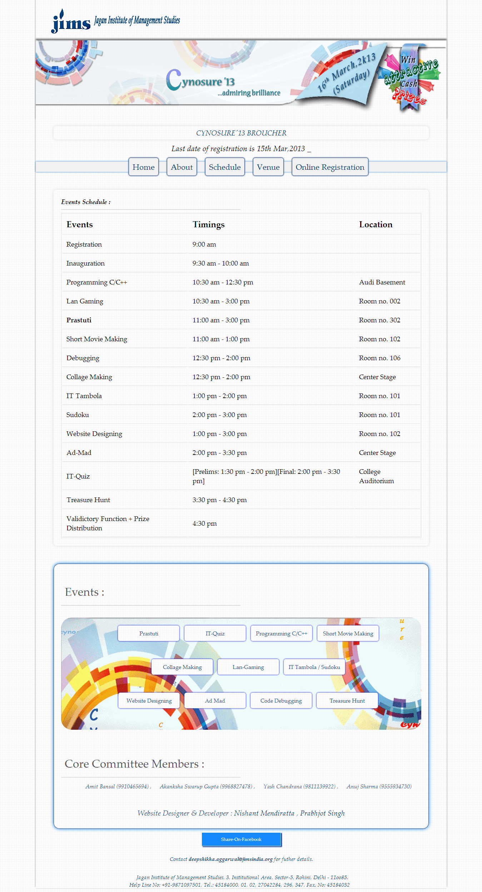

Blood-Connection
The main motive is to create a link between the donors and the receivers.
This is just a beginning, If you are interested in donating blood to needy ones then register your self on this website.
Your information will not be secured as this is the only information which will help the one in need.
Enjoy life, Donate.. not out of pocket but out of veins...
Following are some images of BloodConnection.
Registration Page
Jagan Institute of Management Studies - CYNOSURE '13
About Jims :
Jagan Institute of Management Studies imparts professional education of high quality at the post graduate level in the fields of Management and Information Technology.
The institute has been working for developing highly skilled human capital for industry and business.
About Cynosure :
Jagan Institute of Management Studies organized 4th North India Infotech Students' Conference -CYNOSURE '13.
The purpose of facilitating the fest was to inject motivation and promote knowledge among the individuals.
About Website :
Jagan Institute of Management Studies, Rohini organized its Annual Technical Fest -Cynosure 2013 on 16rd March, 2013 at its campus.
This website was created to provide information about JIMS and all the events which held in Cynosure.
I also helped in storing details of students, who registered for the events.
Following are some images of Cynosure.
Register Team Page
Schedule Page
